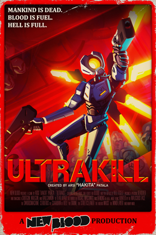

Гейминг индустрията е бързоразвиваща се сфера, включваща създаването, разпространението и продажбата на видеоигри. Тя е многомилиарден бизнес, който привлича милиони играчи и има огромно културно и икономическо значение. Тенденциите включват развитие на виртуална и разширена реалност, облачни игри и увеличаване на конкуренцията между големите играчи и новаторите.
Моите топ 3 игри
The Binding of Isaac
The Binding of Isaac е Roguelike видео игра, проектирана от независими разработчици Edmund McMillen и Florian Himsl. Заглавието и сюжетът на играта са вдъхновени от библейската история за жертването на Исак. The Binding of Isaac е игра за обхождане на подземия отгоре надолу, представена с помощта на двуизмерни спрайтове, в които играчът контролира Isaac или други отключващи се герои, докато изследват подземията, разположени в мазето на Isaac. Героите се различават по скорост, количество здраве, количество щети, които нанасят, и други атрибути.
Terraria
Terraria е екшън-приключенска пясъчна игра от 2011 г., разработена от Re-Logic. Играта включва изследване, изработка, изграждане, рисуване и битка с различни същества в процедурно генериран 2D свят.
Ultrakill

Ultrakill е видеоигра със стрелба от първо лице, разработена от Arsi "Hakita" Patala и публикувана от New Blood Interactive. Ultrakill набляга на умишлено движение и стилни техники. Играчът трябва бързо да си проправи път през интерпретация на слоевете на ада на Данте, като всеки слой е разделен на множество нива.